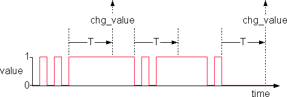
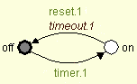
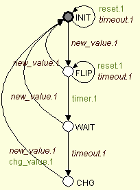

The debounce example describes a simple debouncing circuit, which observes all changes of a binary sensor, filters them, and reports those changes which appear to have been stable for a sufficiently long time.
The debouncing circuit receives an input event new_value,
whenever the value of the binary input signal changes. Its task consists of
sending an output event chg_value when it detects a change
that has been stable for T units of time. This is the case,
if the sensor value has been constant for T units of time,
and the sensor value is different from the last stable value.

In order to achieve its task, the debouncing circuit uses a simple
timer device, represented by the plant automaton
timer shown below. The timer is started by means of the
controllable event timer.1. Once running, it can be reset by
means of the controllable event reset.1. If it is left running
for T units of time, it stops and raises the uncontrollable
event timeout.1.
|  |
Plant timer |
|---|
The specification automaton debouncing shown below is used to
coordinate the input signal and the timer, and generates the output signal
as requested.
|  |
Spec debouncing |
|---|
This automaton waits until a new_value.1 input is detected.
Then it starts the timer, waits for a timeout, and afterwards reports a
chg_value.1. But if another new_value.1 is
detected first, the automaton switches back to its initial state and resets
the timer. This is because an even number of changes of the binary input
value is equivalent to no change, and therefore is to be ignored. The
selfloops in state INIT and FLIP are needed to
ensure controllability and correct behaviour, if one or more value changes
are detected while the timer is running.
© 1998-2000, VALID Technologies. Last Modification Date: 2000-06-19